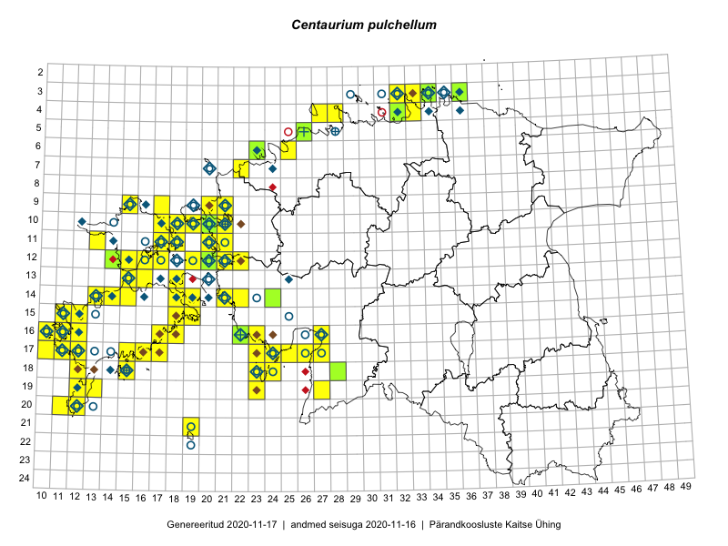

Centaurium pulchellum — väike maasapp
Gentianaceae :: Centaurium pulchellum (Sw.) Druce (398); Erythraea pulchella (Sw.) Fr. (10)

Kaart põhineb 474 kirjel:
vaatlusi 312
herbaareksemplare 96
PKÜ kirjeid1 49
ELFi kirjeid2 16
LVA kirjeid3 1
Taime kaasaegsed ja ajaloolised leiukohad asuvad 112 ruudus.
Tingmärgid ja leidudega ruutude arvud periooditi uues (u) ja 2005 andmestikus (v)
| █ | vahemik | u4 | v5 |
|---|---|---|---|
| █ | 2006–2020 | 79 | – |
| ◆/◇ | 1971–2005 | 70 | 64 |
| ○ | 1921–1970 | 50 | 15 |
| + | kuni 1920 | 5 | 0 |
| × | hävinud | – | 0 |
| ? | kaheldav | – | 0 |
| Ruut | Leidja(d) | Leiuaeg | Kirje |
|---|---|---|---|
| 03-34 | Toomas Kukk, Ott Luuk, Kersti Tambets, Sten Mander, Kristine Fenske, Maie Itse | 2020-08-19 | ruut/ala: Centaurium pulchellum (Sw.) Druce |
| 03-34 | Ott Luuk, Toomas Kukk, Sten Mander, Kersti Tambets, Kristine Fenske, Maie Itse | 2020-08-19 | punkt: Centaurium pulchellum (Sw.) Druce |
| 12-22 | Trinus Haitjema | 2020-08-09 | punkt: Centaurium pulchellum (Sw.) Druce |
| 12-15 | Peedu Saar, Ott Luuk | 2020-08-07 | ruut/ala: Centaurium pulchellum (Sw.) Druce |
| 12-15 | Ott Luuk, Peedu Saar | 2020-08-07 | punkt: Centaurium pulchellum (Sw.) Druce |
| 14-21 | Peedu Saar, Toomas Kukk | 2019-09-25 | ruut/ala: Centaurium pulchellum (Sw.) Druce |
| 10-19 | Peedu Saar, Toomas Kukk | 2019-09-18 | ruut/ala: Centaurium pulchellum (Sw.) Druce |
| 09-20 | Ott Luuk | 2019-09-18 | ruut/ala: Centaurium pulchellum (Sw.) Druce |
| 04-33 | Thea Kull | 2019-09-06 | punkt: Centaurium pulchellum (Sw.) Druce |
| 03-36 | Thea Kull | 2019-09-06 | TAA0148108: Centaurium pulchellum (Sw.) Druce |
| 10-21 | Peedu Saar, Ott Luuk, Sten Mander, Kersti Tambets, Kristine Fenske | 2019-08-23 | ruut/ala: Centaurium pulchellum (Sw.) Druce |
| 03-32 | Ott Luuk, Jaak-Albert Metsoja | 2019-08-07 | ruut/ala: Centaurium pulchellum (Sw.) Druce |
| 03-34 | Rein Kalamees, Toomas Kukk | 2019-08-06 | ruut/ala: Centaurium pulchellum (Sw.) Druce |
| 04-32 | Toomas Kukk, Rein Kalamees | 2019-08-05 | TAA0148689: Centaurium pulchellum (Sw.) Druce |
| 04-32 | Rein Kalamees, Toomas Kukk | 2019-08-05 | ruut/ala: Centaurium pulchellum (Sw.) Druce |
| 03-33 | Rein Kalamees | 2019-07-14 | ruut/ala: Centaurium pulchellum (Sw.) Druce |
| 16-22 | Helle Mäemets | 2019-07-05 | punkt: Centaurium pulchellum (Sw.) Druce |
| 16-22 | Helle Mäemets | 2019-07-05 | TAA2004680: Centaurium pulchellum (Sw.) Druce |
| 17-11 | Helle Mäemets | 2019-07-04 | punkt: Centaurium pulchellum (Sw.) Druce |
| 17-12 | Mari Reitalu | 2018-09-21 | ruut/ala: Centaurium pulchellum (Sw.) Druce |
| 04-28 | Ott Luuk | 2018-09-07 | ruut/ala: Centaurium pulchellum (Sw.) Druce |
| 18-28 | Indrek Tammekänd | 2018-08-25 | TAA0147661: Centaurium pulchellum (Sw.) Druce |
| 15-12 | Mari Reitalu, Sirje Azarov | 2018-08-06 | ELF: 1300 |
| 15-12 | Mari Reitalu, Sirje Azarov | 2018-08-06 | ELF: 1303 |
| 10-18 | Toomas Kukk, Meeli Mesipuu | 2018-07-11 | ruut/ala: Centaurium pulchellum (Sw.) Druce |
| 10-17 | Toomas Kukk | 2018-07-10 | ruut/ala: Centaurium pulchellum (Sw.) Druce |
| 10-17 | Peedu Saar | 2018-07-10 | ruut/ala: Centaurium pulchellum (Sw.) Druce |
| 06-23 | Peedu Saar | 2018-07-05 | ruut/ala: Centaurium pulchellum (Sw.) Druce |
| 06-23 | Peedu Saar | 2018-07-04 | ruut/ala: Centaurium pulchellum (Sw.) Druce |
| 16-27 | Indrek Tammekänd | 2017-09-22 | ruut/ala: Centaurium pulchellum (Sw.) Druce |
| 12-16 | Peedu Saar, Ott Luuk | 2017-09-15 | ruut/ala: Centaurium pulchellum (Sw.) Druce |
| 12-15 | Toomas Kukk, Indrek Tammekänd | 2017-09-13 | ruut/ala: Centaurium pulchellum (Sw.) Druce |
| 12-14 | Toomas Kukk, Indrek Tammekänd | 2017-09-13 | ruut/ala: Centaurium pulchellum (Sw.) Druce |
| 12-14 | Toomas Kukk, Indrek Tammekänd | 2017-09-13 | TAA0141924: Centaurium pulchellum (Sw.) Druce |
| 11-18 | Peedu Saar, Ott Luuk | 2017-09-12 | ruut/ala: Centaurium pulchellum (Sw.) Druce |
| 10-18 | Ott Luuk, Peedu Saar | 2017-09-12 | ruut/ala: Centaurium pulchellum (Sw.) Druce |
| 12-17 | Toomas Kukk, Indrek Tammekänd | 2017-09-11 | ruut/ala: Centaurium pulchellum (Sw.) Druce |
| 19-27 | Peedu Saar, Toomas Kukk | 2017-09-06 | punkt: Centaurium pulchellum (Sw.) Druce |
| 19-27 | Peedu Saar, Toomas Kukk | 2017-09-06 | ruut/ala: Centaurium pulchellum (Sw.) Druce |
| 05-26 | Peedu Saar, Timo Luhamäe | 2017-08-10 | TAA0141099: Centaurium pulchellum (Sw.) Druce |
| 11-20 | Ott Luuk, Ilmar Uibopuu | 2017-08-10 | ruut/ala: Centaurium pulchellum (Sw.) Druce |
| 06-23 | Toomas Kukk | 2017-07-27 | ruut/ala: Centaurium pulchellum (Sw.) Druce |
| 06-23 | Toomas Kukk | 2017-07-27 | punkt: Centaurium pulchellum (Sw.) Druce |
| 06-23 | Toomas Kukk, Ilmar Uibopuu, Kadri Kuusksalu | 2017-07-26 | ruut/ala: Centaurium pulchellum (Sw.) Druce |
| 04-27 | Peedu Saar | 2017-07-20 | ruut/ala: Centaurium pulchellum (Sw.) Druce |
| 17-23 | Indrek Tammekänd, Eike Tammekänd | 2017-07-20 | ruut/ala: Centaurium pulchellum (Sw.) Druce |
| 16-23 | Indrek Tammekänd, Eike Tammekänd | 2017-07-20 | ruut/ala: Centaurium pulchellum (Sw.) Druce |
| 21-19 | Meeli Mesipuu, Ott Luuk | 2016-09-10 | ruut/ala: Centaurium pulchellum (Sw.) Druce |
| 13-16 | Peedu Saar, Ott Luuk | 2016-08-31 | ruut/ala: Centaurium pulchellum (Sw.) Druce |
| 17-17 | Peedu Saar, Ott Luuk | 2016-08-30 | ruut/ala: Centaurium pulchellum (Sw.) Druce |
| 18-15 | Peedu Saar | 2016-08-30 | ruut/ala: Centaurium pulchellum (Sw.) Druce |
| 15-18 | Mari Reitalu, Hannes Pehlak | 2016-08-26 | ruut/ala: Centaurium pulchellum (Sw.) Druce |
| 14-19 | Mari Reitalu, Sirje Azarov | 2016-08-18 | ruut/ala: Centaurium pulchellum (Sw.) Druce |
| 13-15 | Maret Gerz, Peedu Saar | 2016-08-11 | ruut/ala: Centaurium pulchellum (Sw.) Druce |
| 12-14 | Toomas Kukk, Meeli Mesipuu | 2016-08-10 | ruut/ala: Centaurium pulchellum (Sw.) Druce |
| 11-13 | Thea Kull, Peedu Saar | 2016-08-10 | ruut/ala: Centaurium pulchellum (Sw.) Druce |
| 14-18 | Mari Reitalu, Sirje Azarov | 2016-08-09–2016-08-10 | ruut/ala: Centaurium pulchellum (Sw.) Druce |
| 11-18 | Sander Laherand, Peedu Saar, Nele Jõessar | 2016-08-08 | ruut/ala: Centaurium pulchellum (Sw.) Druce |
| 16-18 | Mari Reitalu, Sirje Azarov | 2016-08-08 | ruut/ala: Centaurium pulchellum (Sw.) Druce |
| 20-12 | Mari Reitalu, Sirje Azarov | 2016-08-08 | ruut/ala: Centaurium pulchellum (Sw.) Druce |
| 19-23 | Karin Kaljund, Kaire Lanno, Indrek Melts | 2016-07-28 | ruut/ala: Centaurium pulchellum (Sw.) Druce |
| 18-23 | Karin Kaljund, Kaire Lanno, Indrek Melts | 2016-07-27 | ruut/ala: Centaurium pulchellum (Sw.) Druce |
| 04-32 | Peedu Saar, Timo Luhamäe | 2016-07-26 | ruut/ala: Centaurium pulchellum (Sw.) Druce |
| 03-33 | Peedu Saar, Timo Luhamäe | 2016-07-26 | ruut/ala: Centaurium pulchellum (Sw.) Druce |
| 14-14 | Mari Reitalu, Sirje Azarov | 2016-07-26 | ruut/ala: Centaurium pulchellum (Sw.) Druce |
| 18-24 | Karin Kaljund, Kaire Lanno, Indrek Melts | 2016-07-26 | ruut/ala: Centaurium pulchellum (Sw.) Druce |
| 17-26 | Indrek Tammekänd | 2016-07-25 | ruut/ala: Centaurium pulchellum (Sw.) Druce |
| 14-24 | Aat Sarv, Oliver Parrest | 2016-07-18 | ruut/ala: Centaurium pulchellum (Sw.) Druce |
| 14-24 | Aat Sarv, Oliver Parrest | 2016-07-18 | TAA0145409: Centaurium pulchellum (Sw.) Druce |
| 10-18 | Eeva-Maria Jeletsky, Tarmo Niitla | 2016-07-14 | ruut/ala: Centaurium pulchellum (Sw.) Druce |
| 17-27 | Indrek Tammekänd | 2016-07-12 | ruut/ala: Centaurium pulchellum (Sw.) Druce |
| 12-20 | Rein Kalamees, Liina Oja | 2016-07-08 | ruut/ala: Centaurium pulchellum (Sw.) Druce |
| 10-18 | Sander Laherand, Toomas Kukk | 2016-07-07 | ruut/ala: Centaurium pulchellum (Sw.) Druce |
| 10-19 | Rein Kalamees, Liina Oja | 2016-07-07 | ruut/ala: Centaurium pulchellum (Sw.) Druce |
| 10-20 | Peedu Saar, Timo Luhamäe | 2016-07-07 | ruut/ala: Centaurium pulchellum (Sw.) Druce |
| 17-25 | Tiit Hallikma, Tõnu Ploompuu | 2016-07-06 | ruut/ala: Centaurium pulchellum (Sw.) Druce |
| 06-25 | Toomas Kukk, Sander Laherand | 2016-07-05 | ruut/ala: Centaurium pulchellum (Sw.) Druce |
| 06-25 | Sander Laherand, Toomas Kukk | 2016-07-05 | punkt: Centaurium pulchellum (Sw.) Druce |
| 16-22 | Peedu Saar, Timo Luhamäe, Johannes Kõdar | 2016-07-04 | ruut/ala: Centaurium pulchellum (Sw.) Druce |
| 16-22 | Peedu Saar, Timo Luhamäe, Johannes Kõdar | 2016-07-04 | TAA0133128: Centaurium pulchellum (Sw.) Druce |
| 10-20 | Thea Kull | 2016-06-30 | punkt: Centaurium pulchellum (Sw.) Druce |
| 15-19 | Mari Reitalu, Triin Reitalu | 2016-06-30 | ruut/ala: Centaurium pulchellum (Sw.) Druce |
| 06-23 | Kaie Eha | 2016-06-21 | TALL C010306: Centaurium pulchellum (Sw.) Druce |
| 17-24 | Indrek Tammekänd, Ly Tammekänd | 2015-09-29 | ruut/ala: Centaurium pulchellum (Sw.) Druce |
| 03-32 | Rein Kalamees, Kersti Püssa | 2015-09-06 | ruut/ala: Centaurium pulchellum (Sw.) Druce |
| 16-12 | Mari Reitalu | 2015-09-03 | ruut/ala: Centaurium pulchellum (Sw.) Druce |
| 04-32 | Rein Kalamees, Kersti Püssa | 2015-08-31 | ruut/ala: Centaurium pulchellum (Sw.) Druce |
| 16-22 | Indrek Tammekänd, Vilma Kuusk | 2015-08-30 | ruut/ala: Centaurium pulchellum (Sw.) Druce |
| 12-21 | Ott Luuk, Peedu Saar | 2015-08-28 | PKÜ: 19768 |
| 12-21 | Tiit Hallikma, Toomas Kukk | 2015-08-27 | ruut/ala: Centaurium pulchellum (Sw.) Druce |
| 12-21 | Tiit Hallikma, Toomas Kukk | 2015-08-27 | PKÜ: 18609 |
| 12-21 | Peedu Saar, Ott Luuk | 2015-08-27 | PKÜ: 19785 |
| 12-21 | Peedu Saar, Ott Luuk | 2015-08-27 | PKÜ: 19787 |
| 12-21 | Peedu Saar, Ott Luuk | 2015-08-27 | PKÜ: 19792 |
| 12-21 | Ott Luuk, Peedu Saar | 2015-08-27 | PKÜ: 19778 |
| 09-21 | Ott Luuk, Peedu Saar | 2015-08-26 | ruut/ala: Centaurium pulchellum (Sw.) Druce |
| 09-21 | Ott Luuk, Peedu Saar | 2015-08-26 | PKÜ: 19824 |
| 12-20 | Meeli Mesipuu, Maret Gerz | 2015-08-25 | TAA0140772: Centaurium pulchellum (Sw.) Druce |
| 12-22 | Peedu Saar, Ott Luuk | 2015-08-24 | PKÜ: 18232 |
| 12-22 | Ott Luuk, Peedu Saar | 2015-08-24 | ruut/ala: Centaurium pulchellum (Sw.) Druce |
| 11-21 | Hanna-Eliisa Luts, Tõnu Ploompuu | 2015-08-13 | ruut/ala: Centaurium pulchellum (Sw.) Druce |
| 09-17 | Toomas Kukk, Eerik Leibak | 2015-08-12 | ruut/ala: Centaurium pulchellum (Sw.) Druce |
| 17-24 | Maret Gerz, Leena Gerz | 2015-08-12 | ruut/ala: Centaurium pulchellum (Sw.) Druce |
| 09-15 | Toomas Kukk, Eerik Leibak | 2015-08-11 | ruut/ala: Centaurium pulchellum (Sw.) Druce |
| 13-15 | Toomas Kukk, Eerik Leibak | 2015-08-10 | ruut/ala: Centaurium pulchellum (Sw.) Druce |
| 16-11 | Triin Reitalu, Mari Reitalu | 2015-08-09–2015-08-10 | ruut/ala: Centaurium pulchellum (Sw.) Druce |
| 16-11 | Mari Reitalu, Triin Reitalu | 2015-08-09–2015-08-10 | ruut/ala: Centaurium pulchellum (Sw.) Druce |
| 20-11 | Toomas Kukk, Peedu Saar | 2015-08-05 | ruut/ala: Centaurium pulchellum (Sw.) Druce |
| 17-11 | Mari Reitalu, Triin Reitalu | 2015-08-05 | ruut/ala: Centaurium pulchellum (Sw.) Druce |
| 03-33 | Rein Kalamees, Kersti Püssa | 2015-08-04 | ruut/ala: Centaurium pulchellum (Sw.) Druce |
| 16-10 | Mari Reitalu, Oliver Parrest | 2015-08-04 | ruut/ala: Centaurium pulchellum (Sw.) Druce |
| 17-10 | Mari Reitalu, Oliver Parrest | 2015-08-04 | ruut/ala: Centaurium pulchellum (Sw.) Druce |
| 18-12 | Mari Reitalu, Sirje Azarov, Oliver Parrest | 2015-08-02 | ruut/ala: Centaurium pulchellum (Sw.) Druce |
| 14-13 | Mari Reitalu, Oliver Parrest | 2015-07-24 | ruut/ala: Centaurium pulchellum (Sw.) Druce |
| 17-12 | Mari Reitalu, Triin Reitalu | 2015-07-22–2015-07-31 | ruut/ala: Centaurium pulchellum (Sw.) Druce |
| 15-12 | Mari Reitalu, Oliver Parrest | 2015-07-21 | ruut/ala: Centaurium pulchellum (Sw.) Druce |
| 10-20 | Tõnu Ploompuu, Anna-Grete Rebane, Hanna-Eliisa Luts | 2015-07-20 | ruut/ala: Centaurium pulchellum (Sw.) Druce |
| 15-11 | Mari Reitalu, Oliver Parrest | 2015-07-16 | ruut/ala: Centaurium pulchellum (Sw.) Druce |
| 15-12 | Mari Reitalu, Oliver Parrest | 2015-07-14 | ruut/ala: Centaurium pulchellum (Sw.) Druce |
| 16-12 | Mari Reitalu | 2015-07-08 | ruut/ala: Centaurium pulchellum (Sw.) Druce |
| 19-13 | Oliver Parrest | 2015-07-01 | ruut/ala: Centaurium pulchellum (Sw.) Druce |
| 09-20 | Kadi-Liis Kesler | 2015-06-25–2015-10-11 | ruut/ala: Centaurium pulchellum (Sw.) Druce |
| 16-11 | Sirje Azarov, Mari Reitalu | 2015-06-22–2015-06-23 | ruut/ala: Centaurium pulchellum (Sw.) Druce |
| 12-17 | Eeva-Maria Jeletsky, Tarmo Niitla | 2015-06-21 | ruut/ala: Centaurium pulchellum (Sw.) Druce |
| 16-11 | Mari Reitalu | 2015-05-22 | ruut/ala: Centaurium pulchellum (Sw.) Druce |
| 07-22 | Marju Erit | 2015-05-01–2015-08-20 | ruut/ala: Centaurium pulchellum (Sw.) Druce |
| 10-20 | Peedu Saar, Ott Luuk | 2014-08-29 | punkt: Centaurium pulchellum (Sw.) Druce |
| 10-20 | Ott Luuk, Peedu Saar | 2014-07-29 | ruut/ala: Centaurium pulchellum (Sw.) Druce |
| 10-20 | Ott Luuk, Peedu Saar | 2014-07-29 | PKÜ: 18104 |
| 10-20 | Ott Luuk, Peedu Saar | 2014-07-29 | PKÜ: 18096 |
| 10-20 | Ott Luuk, Peedu Saar | 2014-07-29 | PKÜ: 18097 |
| 12-19 | Ott Luuk | 2014-07-25 | punkt: Centaurium pulchellum (Sw.) Druce |
| 12-20 | Ott Luuk | 2014-07-24–2014-07-28 | ruut/ala: Centaurium pulchellum (Sw.) Druce |
| 18-15 | Mari Reitalu | 2014-07-17 | ruut/ala: Centaurium pulchellum (Sw.) Druce |
| 11-21 | Elle Roosaluste | 2013-09-10 | punkt: Centaurium pulchellum (Sw.) Druce |
| 18-24 | Elin Soomets, Karin Kaljund | 2013-07-25 | punkt: Centaurium pulchellum (Sw.) Druce |
| 18-23 | Elin Soomets, Karin Kaljund | 2013-07-25 | punkt: Centaurium pulchellum (Sw.) Druce |
| 18-23 | Elin Soomets, Karin Kaljund | 2013-07-25 | punkt: Centaurium pulchellum (Sw.) Druce |
| 18-23 | Elin Soomets, Karin Kaljund | 2013-07-25 | punkt: Centaurium pulchellum (Sw.) Druce |
| 18-23 | Elin Soomets, Karin Kaljund | 2013-07-25 | punkt: Centaurium pulchellum (Sw.) Druce |
| 18-23 | Elin Soomets | 2013-07-25 | punkt: Centaurium pulchellum (Sw.) Druce |
| 18-23 | Elin Soomets | 2013-07-25 | punkt: Centaurium pulchellum (Sw.) Druce |
| 18-23 | Elin Soomets | 2013-07-25 | punkt: Centaurium pulchellum (Sw.) Druce |
| 18-23 | Elin Soomets | 2013-07-25 | punkt: Centaurium pulchellum (Sw.) Druce |
| 13-18 | Elin Soomets, Karin Kaljund | 2013-07-24 | punkt: Centaurium pulchellum (Sw.) Druce |
| 13-18 | Elin Soomets, Karin Kaljund | 2013-07-24 | punkt: Centaurium pulchellum (Sw.) Druce |
| 13-18 | Elin Soomets, Karin Kaljund | 2013-07-24 | punkt: Centaurium pulchellum (Sw.) Druce |
| 13-18 | Elin Soomets | 2013-07-24 | punkt: Centaurium pulchellum (Sw.) Druce |
| 13-18 | Elin Soomets | 2013-07-24 | punkt: Centaurium pulchellum (Sw.) Druce |
| 13-18 | Elin Soomets | 2013-07-24 | punkt: Centaurium pulchellum (Sw.) Druce |
| 13-18 | Elin Soomets | 2013-07-24 | punkt: Centaurium pulchellum (Sw.) Druce |
| 13-18 | Elin Soomets | 2013-07-24 | punkt: Centaurium pulchellum (Sw.) Druce |
| 13-18 | Elin Soomets | 2013-07-24 | punkt: Centaurium pulchellum (Sw.) Druce |
| 13-18 | Elin Soomets | 2013-07-24 | punkt: Centaurium pulchellum (Sw.) Druce |
| 13-18 | Elin Soomets | 2013-07-24 | punkt: Centaurium pulchellum (Sw.) Druce |
| 13-18 | Elin Soomets | 2013-07-24 | punkt: Centaurium pulchellum (Sw.) Druce |
| 13-18 | Elin Soomets | 2013-07-24 | punkt: Centaurium pulchellum (Sw.) Druce |
| 19-12 | Karin Kaljund | 2013-07-23 | punkt: Centaurium pulchellum (Sw.) Druce |
| 19-12 | Elin Soomets, Karin Kaljund | 2013-07-23 | punkt: Centaurium pulchellum (Sw.) Druce |
| 19-12 | Elin Soomets, Karin Kaljund | 2013-07-23 | punkt: Centaurium pulchellum (Sw.) Druce |
| 19-12 | Elin Soomets, Karin Kaljund | 2013-07-23 | punkt: Centaurium pulchellum (Sw.) Druce |
| 19-12 | Elin Soomets, Karin Kaljund | 2013-07-23 | punkt: Centaurium pulchellum (Sw.) Druce |
| 19-12 | Elin Soomets, Karin Kaljund | 2013-07-23 | punkt: Centaurium pulchellum (Sw.) Druce |
| 19-12 | Elin Soomets, Karin Kaljund | 2013-07-23 | punkt: Centaurium pulchellum (Sw.) Druce |
| 18-23 | Elin Soomets, Karin Kaljund | 2013-07-23 | punkt: Centaurium pulchellum (Sw.) Druce |
| 19-12 | Elin Soomets | 2013-07-23 | punkt: Centaurium pulchellum (Sw.) Druce |
| 19-12 | Elin Soomets | 2013-07-23 | punkt: Centaurium pulchellum (Sw.) Druce |
| 19-12 | Elin Soomets | 2013-07-23 | punkt: Centaurium pulchellum (Sw.) Druce |
| 17-17 | Elin Soomets | 2013-07-23 | punkt: Centaurium pulchellum (Sw.) Druce |
| 17-17 | Elin Soomets | 2013-07-23 | punkt: Centaurium pulchellum (Sw.) Druce |
| 17-16 | Elin Soomets | 2013-07-23 | punkt: Centaurium pulchellum (Sw.) Druce |
| 14-15 | Elin Soomets, Karin Kaljund | 2013-07-22 | punkt: Centaurium pulchellum (Sw.) Druce |
| 14-15 | Elin Soomets, Karin Kaljund | 2013-07-22 | punkt: Centaurium pulchellum (Sw.) Druce |
| 14-15 | Elin Soomets, Karin Kaljund | 2013-07-22 | punkt: Centaurium pulchellum (Sw.) Druce |
| 14-15 | Elin Soomets, Karin Kaljund | 2013-07-22 | punkt: Centaurium pulchellum (Sw.) Druce |
| 14-15 | Elin Soomets, Karin Kaljund | 2013-07-22 | punkt: Centaurium pulchellum (Sw.) Druce |
| 14-15 | Elin Soomets | 2013-07-22 | punkt: Centaurium pulchellum (Sw.) Druce |
| 14-15 | Elin Soomets | 2013-07-22 | punkt: Centaurium pulchellum (Sw.) Druce |
| 14-22 | Elin Soomets, Karin Kaljund | 2013-07-19 | punkt: Centaurium pulchellum (Sw.) Druce |
| 14-22 | Elin Soomets, Karin Kaljund | 2013-07-19 | punkt: Centaurium pulchellum (Sw.) Druce |
| 16-22 | Elin Soomets, Karin Kaljund | 2013-07-19 | punkt: Centaurium pulchellum (Sw.) Druce |
| 16-22 | Elin Soomets, Karin Kaljund | 2013-07-19 | punkt: Centaurium pulchellum (Sw.) Druce |
| 16-22 | Elin Soomets | 2013-07-19 | punkt: Centaurium pulchellum (Sw.) Druce |
| 16-22 | Elin Soomets | 2013-07-19 | punkt: Centaurium pulchellum (Sw.) Druce |
| 13-15 | Elin Soomets, Karin Kaljund | 2013-07-18 | punkt: Centaurium pulchellum (Sw.) Druce |
| 13-15 | Elin Soomets, Karin Kaljund | 2013-07-18 | punkt: Centaurium pulchellum (Sw.) Druce |
| 13-15 | Elin Soomets, Karin Kaljund | 2013-07-18 | punkt: Centaurium pulchellum (Sw.) Druce |
| 13-15 | Elin Soomets, Karin Kaljund | 2013-07-18 | punkt: Centaurium pulchellum (Sw.) Druce |
| 13-15 | Elin Soomets, Karin Kaljund | 2013-07-18 | punkt: Centaurium pulchellum (Sw.) Druce |
| 13-15 | Elin Soomets, Karin Kaljund | 2013-07-18 | punkt: Centaurium pulchellum (Sw.) Druce |
| 12-16 | Elin Soomets, Karin Kaljund | 2013-07-18 | punkt: Centaurium pulchellum (Sw.) Druce |
| 12-16 | Elin Soomets, Karin Kaljund | 2013-07-18 | punkt: Centaurium pulchellum (Sw.) Druce |
| 12-16 | Elin Soomets, Karin Kaljund | 2013-07-18 | punkt: Centaurium pulchellum (Sw.) Druce |
| 12-16 | Elin Soomets, Karin Kaljund | 2013-07-18 | punkt: Centaurium pulchellum (Sw.) Druce |
| 12-16 | Elin Soomets, Karin Kaljund | 2013-07-18 | punkt: Centaurium pulchellum (Sw.) Druce |
| 12-16 | Elin Soomets, Karin Kaljund | 2013-07-18 | punkt: Centaurium pulchellum (Sw.) Druce |
| 16-22 | Elin Soomets, Karin Kaljund | 2013-07-18 | punkt: Centaurium pulchellum (Sw.) Druce |
| 16-22 | Elin Soomets, Karin Kaljund | 2013-07-18 | punkt: Centaurium pulchellum (Sw.) Druce |
| 12-16 | Elin Soomets | 2013-07-18 | punkt: Centaurium pulchellum (Sw.) Druce |
| 12-16 | Elin Soomets | 2013-07-18 | punkt: Centaurium pulchellum (Sw.) Druce |
| 12-16 | Elin Soomets | 2013-07-18 | punkt: Centaurium pulchellum (Sw.) Druce |
| 12-16 | Elin Soomets | 2013-07-18 | punkt: Centaurium pulchellum (Sw.) Druce |
| 12-16 | Elin Soomets | 2013-07-18 | punkt: Centaurium pulchellum (Sw.) Druce |
| 12-16 | Elin Soomets | 2013-07-18 | punkt: Centaurium pulchellum (Sw.) Druce |
| 12-16 | Elin Soomets | 2013-07-18 | punkt: Centaurium pulchellum (Sw.) Druce |
| 12-16 | Elin Soomets | 2013-07-18 | punkt: Centaurium pulchellum (Sw.) Druce |
| 12-16 | Elin Soomets | 2013-07-18 | punkt: Centaurium pulchellum (Sw.) Druce |
| 13-15 | Elin Soomets | 2013-07-18 | punkt: Centaurium pulchellum (Sw.) Druce |
| 11-17 | K. Lanno | 2013-07-17 | punkt: Centaurium pulchellum (Sw.) Druce |
| 11-17 | K. Lanno | 2013-07-17 | punkt: Centaurium pulchellum (Sw.) Druce |
| 11-17 | Elin Soomets, Karin Kaljund | 2013-07-17 | punkt: Centaurium pulchellum (Sw.) Druce |
| 11-17 | Elin Soomets | 2013-07-17 | punkt: Centaurium pulchellum (Sw.) Druce |
| 11-17 | Elin Soomets | 2013-07-17 | punkt: Centaurium pulchellum (Sw.) Druce |
| 12-17 | Elin Soomets | 2013-07-17 | punkt: Centaurium pulchellum (Sw.) Druce |
| 12-17 | Elin Soomets | 2013-07-17 | punkt: Centaurium pulchellum (Sw.) Druce |
| 12-17 | Elin Soomets | 2013-07-17 | punkt: Centaurium pulchellum (Sw.) Druce |
| 12-17 | Elin Soomets | 2013-07-17 | punkt: Centaurium pulchellum (Sw.) Druce |
| 12-17 | Elin Soomets | 2013-07-17 | punkt: Centaurium pulchellum (Sw.) Druce |
| 12-17 | Elin Soomets | 2013-07-17 | punkt: Centaurium pulchellum (Sw.) Druce |
| 11-17 | Elin Soomets | 2013-07-17 | punkt: Centaurium pulchellum (Sw.) Druce |
| 11-17 | Elin Soomets | 2013-07-17 | punkt: Centaurium pulchellum (Sw.) Druce |
| 11-17 | Elin Soomets | 2013-07-17 | punkt: Centaurium pulchellum (Sw.) Druce |
| 11-17 | Elin Soomets, Karin Kaljund | 2013-06-17 | punkt: Centaurium pulchellum (Sw.) Druce |
| 11-17 | Elin Soomets, Karin Kaljund | 2013-06-17 | punkt: Centaurium pulchellum (Sw.) Druce |
| 11-17 | Elin Soomets, Karin Kaljund | 2013-06-17 | punkt: Centaurium pulchellum (Sw.) Druce |
| 11-17 | Elin Soomets, Karin Kaljund | 2013-06-17 | punkt: Centaurium pulchellum (Sw.) Druce |
| 11-17 | Elin Soomets, Karin Kaljund | 2013-06-17 | punkt: Centaurium pulchellum (Sw.) Druce |
| 11-17 | Elin Soomets, Karin Kaljund | 2013-06-17 | punkt: Centaurium pulchellum (Sw.) Druce |
| 15-11 | Mari Reitalu | 2012-09-04 | ELF: 1311 |
| 15-11 | Mari Reitalu | 2012-09-04 | ELF: 24003 |
| 16-12 | Mari Reitalu | 2012-08-28 | ELF: 24002 |
| 12-21 | Elin Soomets, Silja Kana, Karin Kaljund | 2012-08-07 | punkt: Centaurium pulchellum (Sw.) Druce |
| 12-22 | Elin Soomets, Silja Kana, Karin Kaljund | 2012-08-07 | punkt: Centaurium pulchellum (Sw.) Druce |
| 12-22 | Elin Soomets, Silja Kana, Karin Kaljund | 2012-08-07 | punkt: Centaurium pulchellum (Sw.) Druce |
| 12-21 | Elin Soomets, Silja Kana | 2012-08-07 | punkt: Centaurium pulchellum (Sw.) Druce |
| 10-20 | J.-M. Habicht | 2011-07-12 | TAM0030880: Centaurium pulchellum (Sw.) Druce |
| 16-11 | Mari Reitalu | 2010-08-05 | ELF: 1472 |
| 03-34 | Helle Mäemets | 2008-08-03 | TAA2002919: Centaurium pulchellum (Sw.) Druce |
| 15-19 | Katrin Kaare | 2008-07-13 | LVA: -995650132 |
| 17-15 | Mari Reitalu | 2006-09-12 | ruut/ala: Centaurium pulchellum (Sw.) Druce |
| 10-20 | J.-M. Habicht | 2006-07-11 | TAM0004042: Centaurium pulchellum (Sw.) Druce |
| 11-18 | Toomas Kukk, Aleksander Sennikov, Rein Kalamees, Raul Sulbi | 2005-07-15 | ruut/ala: Centaurium pulchellum (Sw.) Druce |
| 11-18 | Toomas Kukk | 2005-07-15 | TAA0080089: Centaurium pulchellum (Sw.) Druce |
| 12-21 | Vivika Meltsov, Kaili Kattai | 2004-07-28 | TAA0080107: Centaurium pulchellum (Sw.) Druce |
| 14-21 | Marek Sammul, Silvia Sepp | 2002-09-27 | PKÜ: 390 |
| 14-16 | Mari Reitalu, Triin Reitalu | 2002-08-07 | ruut/ala: Centaurium pulchellum (Sw.) Druce |
| 16-11 | Kadriann Saar | 2000-10-22 | PKÜ: 4258 |
| 16-22 | Elle Roosaluste, Katrin Jürgens | 2000-10-15 | PKÜ: 4202 |
| 09-21 | Tõnu Ploompuu | 2000-10-01 | PKÜ: 2829 |
| 11-17;11-18 | Toomas Kukk, Bert Holm | 2000-09-11 | PKÜ: 3923 |
| 10-17 | Toomas Kukk, Bert Holm | 2000-09-09 | PKÜ: 3820 |
| 09-21 | Tõnu Ploompuu, Hannu Ploompuu, Mats Ploompuu | 2000-08-22 | PKÜ: 2571 |
| 09-21 | Tõnu Ploompuu, Hannu Ploompuu, Mats Ploompuu | 2000-08-21 | PKÜ: 2566 |
| 16-23;16-24;17-23;17-24 | Aivo Lepp, Elle Roosaluste | 2000-08-15 | PKÜ: 2189 |
| 16-23 | Aivo Lepp, Elle Roosaluste | 2000-08-15 | PKÜ: 2194 |
| 03-32;03-33 | Priit Holtsmann, Marju Erit | 2000-08-14 | PKÜ: 5898 |
| 11-18 | Elle Roosaluste | 2000-08-05 | PKÜ: 4197 |
| 12-18 | Elle Roosaluste | 2000-08-02 | PKÜ: 4196 |
| 12-22 | Toomas Kukk, Bert Holm | 2000-07-26 | PKÜ: 2340 |
| 14-13 | Mari Reitalu, Tõnu Talvi | 1999-10-25 | PKÜ: 1253 |
| 14-13 | Mari Reitalu, Tõnu Talvi | 1999-10-25 | PKÜ: 1251 |
| 14-13 | Mari Reitalu, Tõnu Talvi | 1999-10-25 | PKÜ: 1254 |
| 14-13 | Mari Reitalu, Tõnu Talvi | 1999-10-25 | PKÜ: 1252 |
| 16-11 | Mari Reitalu, Tõnu Talvi | 1999-10-12 | PKÜ: 1211 |
| 15-11;16-11 | Mari Reitalu, Tõnu Talvi | 1999-10-12 | PKÜ: 1210 |
| 15-11;16-11 | Mari Reitalu, Tõnu Talvi | 1999-10-12 | PKÜ: 1209 |
| 10-21;10-22 | Tõnu Ploompuu | 1999-10-08 | PKÜ: 452 |
| 10-19 | Elle Puurmann | 1999-09-26 | PKÜ: 976 |
| 10-20 | Mare Leis, Valdo Kuusemets | 1999-09-14 | PKÜ: 930 |
| 10-20 | Mare Leis, Valdo Kuusemets | 1999-09-14 | PKÜ: 933 |
| 10-20 | Mare Leis, Valdo Kuusemets | 1999-09-14 | PKÜ: 928 |
| 09-20 | Elle Puurmann | 1999-09-11 | PKÜ: 924 |
| 03-34 | Toomas Kukk, Rein Kalamees | 1999-09-06–1999-09-07 | ruut/ala: Centaurium pulchellum (Sw.) Druce |
| 19-12 | Toomas Kukk, Eerik Leibak | 1999-09-02 | PKÜ: 1098 |
| 09-19 | Elle Puurmann | 1999-08-28 | PKÜ: 943 |
| 14-21 | Marek Sammul, Silvia Sepp, Tõnu Feldmann, Kärt Padari | 1999-08-26 | PKÜ: 404 |
| 14-21 | Marek Sammul, Silvia Sepp | 1999-08-25 | PKÜ: 397 |
| 09-19 | Elle Puurmann | 1999-08-21 | PKÜ: 944 |
| 18-12;18-13 | Toomas Kukk, Alexandr Sennikov, Katrin Heinsoo | 1999-08-19 | PKÜ: 1449 |
| 18-13 | Toomas Kukk, Alexandr Sennikov | 1999-08-17 | PKÜ: 1067 |
| 18-23;19-23 | Elle Roosaluste | 1999-07-24 | PKÜ: 1831 |
| 17-11 | Nele Ingerpuu, Aveliina Helm | 1999-07-22 | PKÜ: 1853 |
| 16-17 | Toomas Kukk, Eerik Leibak | 1999-07-21 | PKÜ: 1186 |
| 18-15 | Toomas Kukk, Peter Veen, Jacob Koopman, Eerik Leibak, Willem Stout Hamer | 1999-07-20 | PKÜ: 1079 |
| 18-23 | Elle Roosaluste | 1999-07-19–1999-07-23 | ruut/ala: Centaurium pulchellum (Sw.) Druce |
| 13-20 | Toomas Kukk | 1999-06-16–1999-06-17 | ruut/ala: Centaurium pulchellum (Sw.) Druce |
| 07-20 | Toomas Kukk, Vilma Kuusk | 1998-07-27–1998-07-30 | ruut/ala: Centaurium pulchellum (Sw.) Druce |
| 16-27 | Toomas Kukk | 1998-07-05–1998-07-08 | ruut/ala: Centaurium pulchellum (Sw.) Druce |
| 14-18 | Toomas Kukk | 1998-06-20 | ruut/ala: Centaurium pulchellum (Sw.) Druce |
| 13-17 | Indrek Ots, Andrus Kuus | 1997-07-22 | ELF: 26 |
| 15-11 | Mari Reitalu | 1996-07-23–1996-09-25 | ruut/ala: Centaurium pulchellum (Sw.) Druce |
| 06-23 | Tõnu Ploompuu | 1995-08-02 | TALL C004683: Centaurium pulchellum (Sw.) Druce |
| 15-18;16-18 | Anneli Palo | 1994-07-30 | ELF: 1454 |
| 16-17;17-17 | Anneli Palo | 1994-06-15–1994-07-30 | ELF: 1947 |
| 17-17 | Anneli Palo | 1994-06-15–1994-07-30 | ELF: 1478 |
| 17-16 | Anneli Palo | 1994-06-15–1994-07-30 | ELF: 1500 |
| 20-12 | Anneli Palo | 1994-06-15–1994-07-28 | ELF: 1492 |
| 09-21 | Anneli Palo | 1994-06-08–1994-08-16 | ELF: 1455 |
| 16-22 | Anneli Palo | 1994-06-07–1994-08-19 | ELF: 1438 |
| 16-22 | Anneli Palo | 1994-06-07–1994-08-19 | ELF: 1506 |
| 14-16 | Mari Reitalu | 1993-09-29–1997 | ruut/ala: Centaurium pulchellum (Sw.) Druce |
| 09-19 | Toomas Kukk, Mare Leis | 1993-08-21–1998-09-22 | ruut/ala: Centaurium pulchellum (Sw.) Druce |
| 14-19 | Urmas Tokko | 1993-07-30 | ELF: 1937 |
| 09-19 | Toomas Kukk, Elle Roosaluste | 1993-07-18–1995-07-15 | ruut/ala: Centaurium pulchellum (Sw.) Druce |
| 10-20 | Toomas Kukk | 1993-07-16 | TAA0080133: Centaurium pulchellum (Sw.) Druce |
| 10-19 | Toomas Kukk, Elle Roosaluste | 1993-07-15–1994-08-17 | ruut/ala: Centaurium pulchellum (Sw.) Druce |
| 09-19 | Toomas Kukk, Elle Roosaluste | 1993-07-09–1996-07-13 | ruut/ala: Centaurium pulchellum (Sw.) Druce |
| 10-19 | Toomas Kukk, Elle Roosaluste | 1993-06–1998-05-31 | ruut/ala: Centaurium pulchellum (Sw.) Druce |
| 07-20 | Toomas Kukk | 1993 | ruut/ala: Centaurium pulchellum (Sw.) Druce |
| 09-19 | Toomas Kukk | 1992-07-17–1993-06-05 | ruut/ala: Centaurium pulchellum (Sw.) Druce |
| 10-19 | Toomas Kukk, Illi Tarmu | 1992-07-16 | ruut/ala: Centaurium pulchellum (Sw.) Druce |
| 10-19 | Toomas Kukk | 1992-07-15 | ruut/ala: Centaurium pulchellum (Sw.) Druce |
| 10-19 | Toomas Kukk | 1992-07-15 | TAA0080134: Centaurium pulchellum (Sw.) Druce |
| 06-23 | Tõnu Ploompuu | 1992–1999 | ruut/ala: Centaurium pulchellum (Sw.) Druce |
| 06-23 | Tõnu Ploompuu | 1992–1999 | ruut/ala: Centaurium pulchellum (Sw.) Druce |
| 10-21 | Tõnu Ploompuu | 1991-08-09 | TALL C004684: Centaurium pulchellum (Sw.) Druce |
| 04-32 | Tõnu Ploompuu | 1991-07-23 | TALL C001384: Centaurium pulchellum (Sw.) Druce |
| 03-35 | Tõnu Ploompuu | 1991-07-13 | TALL C004682: Centaurium pulchellum (Sw.) Druce |
| 13-17 | Mari Reitalu | 1991–1997 | ruut/ala: Centaurium pulchellum (Sw.) Druce |
| 12-20 | Loore Ehrlich | 1990-08-03 | TAM0014390: Centaurium pulchellum (Sw.) Druce |
| 14-13 | Mari Reitalu | 1990–1998 | ruut/ala: Centaurium pulchellum (Sw.) Druce |
| 18-14 | M. Reitalu | 1989–1997 | ruut/ala: Centaurium pulchellum (Sw.) Druce |
| 07-24 | Tiiu Kull, Nele Ingerpuu, Vilma Kuusk | 1986-07-23 | ruut/ala: Centaurium pulchellum (Sw.) Druce |
| 12-20 | H.-E. Rebassoo | 1985-08-08 | ruut/ala: Centaurium pulchellum (Sw.) Druce |
| 11-20 | H.-E. Rebassoo | 1985-08-08 | ruut/ala: Centaurium pulchellum (Sw.) Druce |
| 10-17 | Taavi Tuulik | 1984–1986 | ruut/ala: Centaurium pulchellum (Sw.) Druce |
| 12-15 | Taavi Tuulik | 1984–1986 | ruut/ala: Centaurium pulchellum (Sw.) Druce |
| 13-20 | M. Leht, M. Abakumova | 1983-08-24 | ruut/ala: Centaurium pulchellum (Sw.) Druce |
| 13-18 | M. Leht, M. Abakumova | 1983-08-23 | ruut/ala: Centaurium pulchellum (Sw.) Druce |
| 14-19 | Linda Viljasoo, Heljo Krall, Vilma Kuusk | 1983-08-22–1986-06-02 | ruut/ala: Centaurium pulchellum (Sw.) Druce |
| 12-20 | 1983-07-13 | ruut/ala: Centaurium pulchellum (Sw.) Druce | |
| 14-14 | Mari Reitalu | 1983–1998 | ruut/ala: Centaurium pulchellum (Sw.) Druce |
| 13-25 | Linda Viljasoo | 1982-08-04 | TAA0080093: Centaurium pulchellum (Sw.) Druce |
| 16-12 | A. Toomel | 1980-08-09 | TAA0080124: Centaurium pulchellum (Sw.) Druce |
| 16-12 | Linda Viljasoo, A. Toomel, Maret Kask | 1980-08 | ruut/ala: Centaurium pulchellum (Sw.) Druce |
| 13-15 | Taavi Tuulik | 1980–2000 | ruut/ala: Centaurium pulchellum (Sw.) Druce |
| 11-14 | Taavi Tuulik | 1980–2000 | ruut/ala: Centaurium pulchellum (Sw.) Druce |
| 10-18 | Taavi Tuulik | 1980–2000 | ruut/ala: Centaurium pulchellum (Sw.) Druce |
| 10-12 | Taavi Tuulik | 1980–2000 | ruut/ala: Centaurium pulchellum (Sw.) Druce |
| 09-16 | Taavi Tuulik | 1980–2000 | ruut/ala: Centaurium pulchellum (Sw.) Druce |
| 09-15 | Taavi Tuulik | 1980–2000 | ruut/ala: Centaurium pulchellum (Sw.) Druce |
| 11-18 | H.-E. Rebassoo | 1979-06-23–1980-08-25 | ruut/ala: Centaurium pulchellum (Sw.) Druce |
| 14-20 | Haide-Ene Rebassoo | 1977-08-25 | ruut/ala: Centaurium pulchellum (Sw.) Druce |
| 12-20 | H.-E. Rebassoo | 1977-07-15 | ruut/ala: Centaurium pulchellum (Sw.) Druce |
| 03-36 | Linda Viljasoo | 1975-08-12 | TAA0080098: Centaurium pulchellum (Sw.) Druce |
| 04-36 | Maret Kask | 1975-08-11 | TAA0080099: Centaurium pulchellum (Sw.) Druce |
| 03-36 | Linda Viljasoo | 1975-08-09 | TAA0080127: Centaurium pulchellum (Sw.) Druce |
| 03-36 | Liivia Laasimer | 1975-08-08 | TAA0080125: Centaurium pulchellum (Sw.) Druce |
| 03-34 | Maret Kask | 1974-07-23 | TAA0080126: Centaurium pulchellum (Sw.) Druce |
| 03-36 | 1974-07–1975-07 | ruut/ala: Centaurium pulchellum (Sw.) Druce | |
| 04-34 | 1974–1976 | ruut/ala: Centaurium pulchellum (Sw.) Druce | |
| 18-23 | M. Kääri, T. Grüntal | 1973-07-16 | ruut/ala: Centaurium pulchellum (Sw.) Druce |
| 18-23 | TRÜ tudengid | 1973-07-14–1973-07-28 | ruut/ala: Centaurium pulchellum (Sw.) Druce |
| 12-20 | H.-E. Rebassoo | 1973-06-19 | ruut/ala: Centaurium pulchellum (Sw.) Druce |
| 13-20 | H.-E. Rebassoo | 1973-06-19 | ruut/ala: Centaurium pulchellum (Sw.) Druce |
| 16-10 | H.-E. Rebassoo | 1972-07-20 | ruut/ala: Centaurium pulchellum (Sw.) Druce |
| 15-12 | Vilma Kuusk | 1972-07-18 | TAA0080086: Centaurium pulchellum (Sw.) Druce |
| 17-11 | Haide-Ene Rebassoo | 1972-07-18 | ruut/ala: Centaurium pulchellum (Sw.) Druce |
| 16-11 | Mari Reitalu | 1972–2005 | ruut/ala: Centaurium pulchellum (Sw.) Druce |
| 19-12 | Mari Reitalu | 1972–1999 | ruut/ala: Centaurium pulchellum (Sw.) Druce |
| 16-12 | Mari Reitalu | 1971–2005 | ruut/ala: Centaurium pulchellum (Sw.) Druce |
| 17-12 | M. Reitalu | 1971 | ruut/ala: Centaurium pulchellum (Sw.) Druce |
| 16-10 | Haide-Ene Rebassoo | 1969-07-31 | ruut/ala: Centaurium pulchellum (Sw.) Druce |
| 16-11 | Haide-Ene Rebassoo | 1969-07-31 | ruut/ala: Centaurium pulchellum (Sw.) Druce |
| 16-11 | Haide-Ene Rebassoo | 1969-07-30 | ruut/ala: Centaurium pulchellum (Sw.) Druce |
| 16-11 | Haide-Ene Rebassoo | 1969-07-30 | ruut/ala: Centaurium pulchellum (Sw.) Druce |
| 16-11 | Haide-Ene Rebassoo | 1969-07-30 | ruut/ala: Centaurium pulchellum (Sw.) Druce |
| 14-13 | 1969-07-28 | ruut/ala: Centaurium pulchellum (Sw.) Druce | |
| 20-13 | Maret Kask | 1969-07-25 | ruut/ala: Centaurium pulchellum (Sw.) Druce |
| 20-12 | Maret Kask | 1969-07-25 | TAA0080128: Centaurium pulchellum (Sw.) Druce |
| 09-19 | Haide-Ene Rebassoo | 1968-06-14 | ruut/ala: Centaurium pulchellum (Sw.) Druce |
| 15-25 | Alma Saare, Silvia Talts | 1964-07-15 | TAA0080130: Centaurium pulchellum (Sw.) Druce |
| 12-21 | Silvia Krastin | 1963-08-03 | TAA0080132: Centaurium pulchellum (Sw.) Druce |
| 11-21 | Silvia Krastin | 1963-08-01 | TAA0080097: Centaurium pulchellum (Sw.) Druce |
| 11-20 | E. Lellep | 1961-08-03 | ruut/ala: Centaurium pulchellum (Sw.) Druce |
| 11-20 | E. Lellep | 1961-08-03 | ruut/ala: Centaurium pulchellum (Sw.) Druce |
| 12-20 | E. Lellep | 1961-08-02 | ruut/ala: Centaurium pulchellum (Sw.) Druce |
| 11-20 | E. Lellep | 1961-08-01 | ruut/ala: Centaurium pulchellum (Sw.) Druce |
| 16-10 | Haide-Ene Rebassoo | 1960-08-24–1972-07-20 | ruut/ala: Centaurium pulchellum (Sw.) Druce |
| 11-17 | Kuulo Kalamees | 1960-07-13 | TAA0080091: Centaurium pulchellum (Sw.) Druce |
| 10-18 | Haide-Ene Rebassoo | 1959-08-17 | TU263472: Centaurium pulchellum (Sw.) Druce |
| 20-12 | Maret Kask, Vilma Kuusk, Liivia Laasimer, Linda Viljasoo | 1959–1980 | ruut/ala: Centaurium pulchellum (Sw.) Druce |
| 03-32 | Linda Viljasoo, Juta Kaasik | 1958-08-02 | TAA0080095: Centaurium pulchellum (Sw.) Druce |
| 03-32 | Linda Viljasoo, Juta Kaasik | 1958-08-02 | TAA0080096: Centaurium pulchellum (Sw.) Druce |
| 03-32 | Agnes Ojaveer, Alma Saare | 1958-08-02 | TAA0080136: Centaurium pulchellum (Sw.) Druce |
| 03-34 | Juta Kaasik | 1958-08-01 | TAA0080135: Centaurium pulchellum (Sw.) Druce |
| 11-16 | Haide-Ene Rebassoo | 1958–1970 | ruut/ala: Centaurium pulchellum (Sw.) Druce |
| 10-14 | Haide-Ene Rebassoo | 1957–1984 | ruut/ala: Centaurium pulchellum (Sw.) Druce |
| 11-16 | Haide-Ene Rebassoo | 1957–1984 | ruut/ala: Centaurium pulchellum (Sw.) Druce |
| 11-17 | Haide-Ene Rebassoo | 1957–1984 | ruut/ala: Centaurium pulchellum (Sw.) Druce |
| 11-18 | Haide-Ene Rebassoo | 1957–1984 | ruut/ala: Centaurium pulchellum (Sw.) Druce |
| 12-16 | Haide-Ene Rebassoo | 1957–1984 | ruut/ala: Centaurium pulchellum (Sw.) Druce |
| 12-17 | Haide-Ene Rebassoo | 1957–1984 | ruut/ala: Centaurium pulchellum (Sw.) Druce |
| 12-18 | Haide-Ene Rebassoo | 1957–1984 | ruut/ala: Centaurium pulchellum (Sw.) Druce |
| 12-18 | H. Rebassoo | 1957–1972 | ruut/ala: Centaurium pulchellum (Sw.) Druce |
| 17-14 | Tarmo Timm | 1954-08-09 | TAA0080129: Centaurium pulchellum (Sw.) Druce |
| 14-23 | Maret Kask | 1953-07-20 | TAA0080138: Centaurium pulchellum (Sw.) Druce |
| 10-19 | H. Krall | 1952-09 | ruut/ala: Centaurium pulchellum (Sw.) Druce |
| 05-28 | Albert Üksip | 1951-09-19 | TAM0129327: Erythraea pulchella (Sw.) Fr. |
| 05-28 | V. Kasak | 1951-08-12 | TAM0014391: Centaurium pulchellum (Sw.) Druce |
| 05-28 | V. Kasak | 1951-07-29 | TAM0014392: Centaurium pulchellum (Sw.) Druce |
| 14-21 | Maret Kask | 1949-08-26 | TAA0080094: Centaurium pulchellum (Sw.) Druce |
| 14-21 | Linda Tehver | 1949-08-25 | TAA0080090: Centaurium pulchellum (Sw.) Druce |
| 15-13 | M. Kask | 1948-08-08–1969-07-29 | ruut/ala: Centaurium pulchellum (Sw.) Druce |
| 14-13 | Maret Kask | 1948-08-07–1979 | ruut/ala: Centaurium pulchellum (Sw.) Druce |
| 11-16 | Maret Kask | 1948-07-27 | TAA0080079: Centaurium pulchellum (Sw.) Druce |
| 11-16 | Maret Kask | 1948-07-27 | TAA0080080: Centaurium pulchellum (Sw.) Druce |
| 11-16 | Asta Nõmmsalu | 1948-07-27 | TAA0080120: Centaurium pulchellum (Sw.) Druce |
| 03-29 | Gustav Vilbaste | 1948-07-11 | TAM0014105: Centaurium pulchellum (Sw.) Druce |
| 11-16 | M. Kask | 1948-07–1970-07 | ruut/ala: Centaurium pulchellum (Sw.) Druce |
| 17-24 | L. Laasimer | 1948-07 | ruut/ala: Centaurium pulchellum (Sw.) Druce |
| 05-28 | Gustav Vilbaste | 1947-08-19 | TAM0014100: Erythraea pulchella (Sw.) Fr. |
| 05-28 | Gustav Vilbaste | 1947-08-19 | TAM0014101: Erythraea pulchella (Sw.) Fr. |
| 10-21 | E. Peikel | 1947-08-12 | TAM0014106: Centaurium pulchellum (Sw.) Druce |
| 18-23 | Gustav Vilbaste | 1940-08-31 | TAA0080118: Centaurium pulchellum (Sw.) Druce |
| 18-24 | Gustav Vilbaste | 1940-07-29 | TAA0080088: Centaurium pulchellum (Sw.) Druce |
| 16-26 | P. Kaaret | 1936-08 | ruut/ala: Centaurium pulchellum (Sw.) Druce |
| 05-28 | H. Salasoo | 1936-07-11 | TAM0014104: Erythraea pulchella (Sw.) Fr. |
| 17-13 | B. Saarsoo | 1936–1938 | ruut/ala: Centaurium pulchellum (Sw.) Druce |
| 11-20 | B. Fromhold-Treu | 1935 | ruut/ala: Centaurium pulchellum (Sw.) Druce |
| 12-19 | Gustav Vilbaste | 1934-08-16 | TAA0080110: Centaurium pulchellum (Sw.) Druce |
| 10-21 | Gustav Vilbaste | 1934-08-14 | TAA0080111: Centaurium pulchellum (Sw.) Druce |
| 10-21 | Gustav Vilbaste | 1934-08-11 | TAA0080112: Centaurium pulchellum (Sw.) Druce |
| 13-15 | 1934-08 | TAA0080085: Centaurium pulchellum (Sw.) Druce | |
| 09-21 | Gustav Vilbaste | 1934-07-13 | TAA0080092: Centaurium pulchellum (Sw.) Druce |
| 07-20 | Gustav Vilbaste | 1934-07-11 | TAA0080116: Centaurium pulchellum (Sw.) Druce |
| 17-11 | B. Saarsoo | 1934-07–1934-10 | ruut/ala: Centaurium pulchellum (Sw.) Druce |
| 05-28 | H. Salasoo, J. Rebane | 1934–1938 | ruut/ala: Centaurium pulchellum (Sw.) Druce |
| 17-12 | B. Saarsoo | 1934–1938 | ruut/ala: Centaurium pulchellum (Sw.) Druce |
| 15-11 | E. Pastak | 1934 | ruut/ala: Centaurium pulchellum (Sw.) Druce |
| 15-11 | Elsa Varep | 1933-08-15 | TAA0080121: Centaurium pulchellum (Sw.) Druce |
| 03-31 | Gustav Vilbaste | 1933 | ruut/ala: Centaurium pulchellum (Sw.) Druce |
| 14-21 | Gustav Vilbaste | 1932-07-28 | TAA0080109: Centaurium pulchellum (Sw.) Druce |
| 14-21 | Gustav Vilbaste | 1932-07-27 | TAA0080108: Centaurium pulchellum (Sw.) Druce |
| 03-35 | Hugo Sogenbits | 1932-07-20 | TAA0080122: Centaurium pulchellum (Sw.) Druce |
| 03-35 | H. Salasoo | 1932-07-20 | TAM0014103: Centaurium pulchellum (Sw.) Druce |
| 22-19 | Gustav Vilbaste | 1932-07-18 | TAA0080119: Centaurium pulchellum (Sw.) Druce |
| 18-15 | 1932–1972 | ruut/ala: Centaurium pulchellum (Sw.) Druce | |
| 12-16 | Gustav Vilbaste | 1931-08-20 | TAA0080100: Centaurium pulchellum (Sw.) Druce |
| 10-14 | Gustav Vilbaste | 1931-08-14 | TAA0080102: Centaurium pulchellum (Sw.) Druce |
| 09-21 | Gustav Vilbaste | 1931-08-06 | TAA0080115: Centaurium pulchellum (Sw.) Druce |
| 18-15 | T. Lippmaa | 1931-08-05 | TU269471: Centaurium pulchellum (Sw.) Druce |
| 18-15 | T. Lippmaa | 1931-08-05 | TAM0064434: Centaurium pulchellum (Sw.) Druce |
| 18-15 | T. Lippmaa | 1931-08-05 | TAM0088613: Centaurium pulchellum (Sw.) Druce |
| 10-21 | Gustav Vilbaste | 1931-07-31 | TAA0080113: Centaurium pulchellum (Sw.) Druce |
| 09-15 | Gustav Vilbaste | 1931-07-29 | TAA0080103: Centaurium pulchellum (Sw.) Druce |
| 10-21 | Gustav Vilbaste | 1931-07-19 | TAA0080114: Centaurium pulchellum (Sw.) Druce |
| 11-17 | Gustav Vilbaste | 1931-07-16 | TAA0080105: Centaurium pulchellum (Sw.) Druce |
| 11-17 | Gustav Vilbaste | 1931-07-16 | TAA0080106: Centaurium pulchellum (Sw.) Druce |
| 11-18 | Gustav Vilbaste | 1931-07-07 | TAA0080101: Centaurium pulchellum (Sw.) Druce |
| 18-23 | Teodor Lippmaa | 1931 | ruut/ala: Centaurium pulchellum (Sw.) Druce |
| 17-24 | Silvia Krastin | 1930-07-18 | TAA0080123: Centaurium pulchellum (Sw.) Druce |
| 12-18 | Gustav Vilbaste | 1930-07-08 | TAA0080104: Centaurium pulchellum (Sw.) Druce |
| 07-20 | Gustav Vilbaste | 1930–1939 | ruut/ala: Centaurium pulchellum (Sw.) Druce |
| 10-20 | Gustav Vilbaste | 1930–1939 | ruut/ala: Centaurium pulchellum (Sw.) Druce |
| 13-20 | Gustav Vilbaste | 1930–1939 | ruut/ala: Centaurium pulchellum (Sw.) Druce |
| 11-20 | Gustav Vilbaste | 1930–1939 | ruut/ala: Centaurium pulchellum (Sw.) Druce |
| 14-21 | Gustav Vilbaste | 1930–1939 | ruut/ala: Centaurium pulchellum (Sw.) Druce |
| 14-21 | Gustav Vilbaste | 1930–1939 | ruut/ala: Centaurium pulchellum (Sw.) Druce |
| 10-20 | Gustav Vilbaste | 1930–1939 | ruut/ala: Centaurium pulchellum (Sw.) Druce |
| 21-19 | Julius Gröntved | 1929 | ruut/ala: Centaurium pulchellum (Sw.) Druce |
| 16-27 | Johannes Talts | 1926-08-08 | TAA0080087: Centaurium pulchellum (Sw.) Druce |
| 17-14 | J. Esser, Fichtenberg | 1925-07-12 | TAA0117139: Erythraea pulchella (Sw.) Fr. |
| 16-27 | Johannes Talts | 1924-08-03 | TAA0080131: Centaurium pulchellum (Sw.) Druce |
| 03-31 | Gustav Vilbaste | 1924-07-16 | TAA0080117: Centaurium pulchellum (Sw.) Druce |
| 05-28 | Paul Wasmuth | 1904-06-14 | TAM0132307: Centaurium pulchellum (Sw.) Druce |
| 05-26 | Rudolph Lehbert | 1901-07-10 | TAM0060866: Erythraea pulchella (Sw.) Fr. |
| 10-21 | Theodor Lackschewitz | 1885-06 | TAA0080081: Centaurium pulchellum (Sw.) Druce |
| 10-21 | Theodor Lackschewitz | 1885-06 | TAA0080082: Centaurium pulchellum (Sw.) Druce |
| 16-22 | J. Treboux | 1872-06-23 | TAM0098545: Erythraea pulchella (Sw.) Fr. |
| 10-21 | Theodor Frese | 1854-07-13 | TAM0098224: Erythraea pulchella (Sw.) Fr. |
| 10-21 | P. Glehn | TAM0098049: Erythraea pulchella (Sw.) Fr. | |
| 18-15 | Bunge, Schmidt, Wiedemann | TU269029: Erythraea pulchella (Sw.) Fr. | |
| 18-15 | Alexander Andrejewitsch (Aleksandr Andreevic, Aleksandrovic) Bunge | TAA0080083: Centaurium pulchellum (Sw.) Druce |
Pärandkoosluste Kaitse Ühingu (PKÜ) andmebaas sisaldab inventeeritud koosluste kirjeldusi ja liigiloendeid. Kõige enam on andmeid niidutaimede kohta.↩︎
Eestimaa Looduse Fondi (ELF) andmebaas sisaldab inventeeritud koosluste kirjeldusi ja liigiloendeid. Eriti rohkesti on andmeid märgalade kohta.↩︎
Loodusvaatluste andmebaas. https://lva.eelis.ee, väljavõte seisuga 19.10.2020↩︎
Ruutude arv uue atlase andmekogu järgi. Muuhulgas arvestab vanemat herbaariumi, 2005. aasta atlase välitöölehtedelt uuesti digitaliseeritud andmeid jne. Uue atlase andmekogust pärinevad andmed on kaardile kantud siniste sümbolitega.↩︎
Ruutude arv 2005. aasta atlase (Kukk, T., Kull, T., Eesti taimede levikuatlas. Eesti Maaülikool, Põllumajandus- ja Keskkonnainstituut, Tartu, 2005) järgi. Andmeallikana on kasutatud levik.exe programmi, kus igas ruudus on registreeritud vaid uusim leid. Seetõttu on vanemate perioodide kohta andmed puudulikud. Kasutatud levik.exe andmestikus leidub mõningaid kõrvalekaldeid atlase trükis ilmunud versioonist, sagedamini tarnade ja käpaliste seas. Lisaks leidub selles andmestikus valik liike (peamiselt väheste leidudega tulnuktaimed), mille kaarte trükis ei avaldatud. Vana atlase andmed ruutudest, milles ei ole uue atlase andmekogus leide enne 2006. aastat, on kaardil esitatud punaste sümbolitega. Vana atlase andmetel hävinud ja kaheldavaid leiukohti pole hilisemate (taas)leidude põhjal korrigeeritud.↩︎